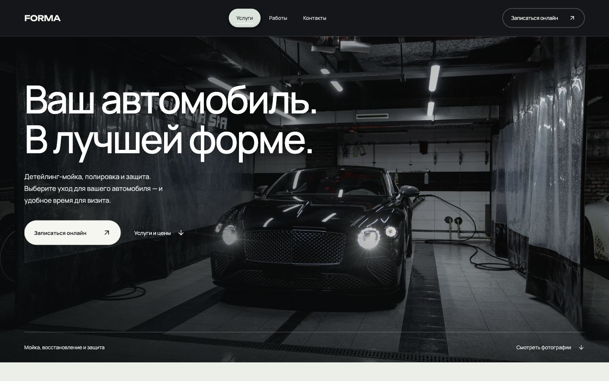

VECTOR
Характер бренда — в каждом движении.

Лендинг закрытого клуба. Крупная типографика, анимированный знак и последовательное раскрытие программы ведут посетителя к обращению.
Дизайн, вёрстка, анимацияРазобрать кейс
Проектирую и разрабатываю сайты,
которые хочется рассмотреть.
Лендинги, онлайн-запись
и уведомления в Telegram.
Характер бренда — в каждом движении.
Лендинг закрытого клуба. Крупная типографика, анимированный знак и последовательное раскрытие программы ведут посетителя к обращению.
Сайт, на котором забота начинается с записи.

От фотографии автомобиля до выбора услуги и времени. Заявки собираются в кабинете; уведомления можно подключить к Telegram студии.
Демонстрация шаблона. Фотографии иллюстративные; авторы и лицензии.
Отдельные проекты автоматизации: Telegram-боты и серверная инфраструктура.
Боты работают в закрытом доступе. В кейсах — возможности и границы реализации; действующие подписки и данные пользователей не публикуются.
Оформление помогает заинтересовать. Понятный сценарий помогает сделать следующий шаг.
Композиция, типографика и фотографии под характер вашего бизнеса. Удобный просмотр на телефоне и компьютере.
Услуги, цены и запись находятся там, где их ожидают. Форма собирает нужные контакты и объясняет, что будет дальше.
Новая заявка — с услугой, временем и контактами клиента. В кабинете можно посмотреть обращение и изменить его статус.
Расскажите о бизнесе и задаче.
Обсудим структуру, оформление
и то, как сайт должен работать.